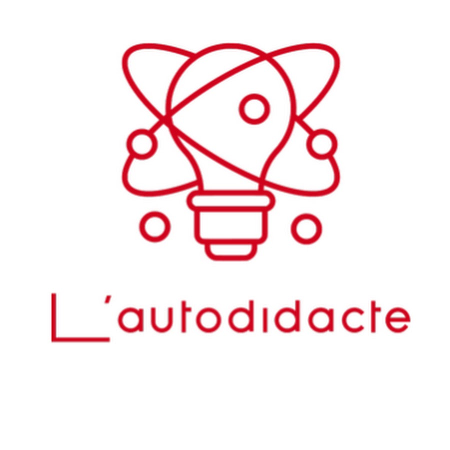

Qui suis je ?
Je m'appelle Yoann GOBERVILLE, j'ai 18 ans, et je suis en première année de BTS SIO option SISR au Campus Saint-Aspais à Melun (77000).
Mes compétences


J'apprend par moi-même
J'apprend de mes erreurs
Projet
J'ai fait un site pour mon chef d'oeuvre de BAC qui devais contenir une messagerie.